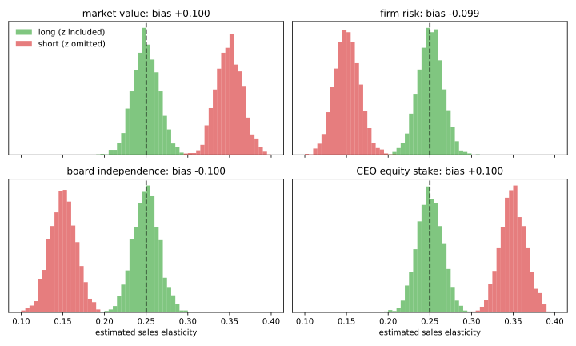
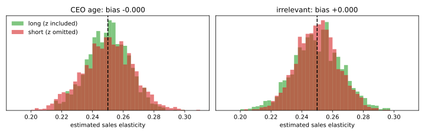
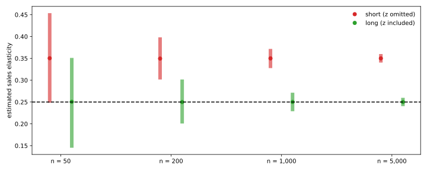

Articles · Econometrics
Omitted Variable Bias: Too Few Variables
A regression coefficient is a ceteris paribus effect only if the unobserved factors are unrelated to the regressors. This article looks at the most common way that assumption fails: a variable that matters is left out of the model.
The examples use simulated CEOs. Because we write the true model ourselves, we know the correct answer and can measure exactly how wrong the estimate is. All estimates are computed from scratch with NumPy.
Holding other factors fixed
Take a model with two explanatory variables:
$$y = \beta_0 + \beta_1 x_1 + \beta_2 x_2 + u .$$The OLS estimate of \(\beta_1\) can be obtained in two steps. First, regress \(x_1\) on \(x_2\) and keep the residuals \(\hat r_1\): the part of \(x_1\) that \(x_2\) cannot explain. Then regress \(y\) on those residuals:
$$\hat\beta_1 = \frac{\sum_{i=1}^n \hat r_{i1}\, y_i}{\sum_{i=1}^n \hat r_{i1}^2} .$$This is what "holding \(x_2\) fixed" means in practice: \(\hat\beta_1\) uses only the variation in \(x_1\) that is unrelated to \(x_2\). If \(x_2\) is left out, that variation is no longer removed, and part of the effect of \(x_2\) is credited to \(x_1\).
The omitted variable bias formula
Suppose the true model contains \(x_2\), but we estimate the short regression of \(y\) on \(x_1\) alone. In any sample, the short and the long slope are linked by an exact identity:
$$\tilde\beta_1 = \hat\beta_1 + \hat\beta_2\,\tilde\delta_1 ,$$where \(\tilde\delta_1\) is the slope from regressing \(x_2\) on \(x_1\). Taking expectations gives the bias of the short regression:
$$\mathrm{Bias}(\tilde\beta_1) = \mathbb E[\tilde\beta_1] - \beta_1 = \beta_2\,\delta_1 .$$The bias is zero only if \(\beta_2 = 0\) (the omitted variable does not matter) or if \(x_1\) and \(x_2\) are uncorrelated. Otherwise its sign follows from the two signs:
| \(\mathrm{Corr}(x_1, x_2) > 0\) | \(\mathrm{Corr}(x_1, x_2) < 0\) | |
|---|---|---|
| \(\beta_2 > 0\) | upward bias | downward bias |
| \(\beta_2 < 0\) | downward bias | upward bias |
A check on one sample
The code below defines an ols() function and simulates CEOs whose log salary depends on log sales, with a true elasticity of 0.25, and on a second variable \(z\) with correlation \(\rho\) with sales. In the first sample, \(z\) is the firm's market value: it raises pay and is positively correlated with sales.
import numpy as np
def ols(y, *regressors):
X = np.column_stack([np.ones(len(y)), *regressors])
n, k = X.shape
XtX_inv = np.linalg.inv(X.T @ X)
b = XtX_inv @ X.T @ y # (X'X)^-1 X'y
u = y - X @ b # residuals
s2 = (u @ u) / (n - k) # error variance estimate
se = np.sqrt(s2 * np.diag(XtX_inv))
r2 = 1 - (u @ u) / ((y - y.mean()) @ (y - y.mean()))
return b, b / se, r2
B0, B1 = 1.0, 0.25 # true sales elasticity of pay
MU_X, SD_X, SD_U = 8.0, 1.5, 0.45
def simulate(rng, n, b2, rho):
e1, e2 = rng.standard_normal(n), rng.standard_normal(n)
sales = MU_X + SD_X * e1 # log(sales)
z = rho * e1 + np.sqrt(1 - rho**2) * e2 # omitted variable
# Corr(sales, z) = rho
u = SD_U * rng.standard_normal(n)
salary = B0 + B1 * sales + b2 * z + u # log(salary)
return sales, z, salary
rng = np.random.default_rng(1)
sales, z, salary = simulate(rng, 500, 0.30, 0.5) # market value world
b_long = ols(salary, sales, z)[0]
b_short = ols(salary, sales)[0]
delta = ols(z, sales)[0] # slope of z on sales
a = ols(sales, z)[0]
r = sales - a[0] - a[1] * z # sales net of z
print(f"long regression: {b_long[1]:.4f}")
print(f"partialling out: {r @ salary / (r @ r):.4f}")
print(f"short regression: {b_short[1]:.4f}")
print(f"long + b2 * delta: {b_long[1] + b_long[2] * delta[1]:.4f}")long regression: 0.2463 partialling out: 0.2463 short regression: 0.3613 long + b2 * delta: 0.3613
The two-step partialling-out estimate reproduces the long regression exactly, and the short regression equals the long one plus \(\hat\beta_2\tilde\delta_1\), to the last digit. Leaving market value out raises the estimated elasticity from 0.246 to 0.361.
Six simulated worlds
One sample can be lucky. To measure the bias we draw 2,000 samples of 500 CEOs in six worlds. The true elasticity is always 0.25; only the omitted variable changes. The stories are stylised and the numbers simulated:
| Omitted \(z\) | Story | Effect on pay | Corr. with sales |
|---|---|---|---|
| Market value | boards reward value; big firms are worth more | + | + |
| CEO equity stake | owners take less cash; smaller stakes in big firms | − | − |
| Firm risk | risk earns a pay premium; big firms are safer | + | − |
| Board independence | independent boards restrain pay; common in big firms | − | + |
| CEO age | pay rises with experience; unrelated to firm size | + | 0 |
| Irrelevant variable | no effect on pay; correlated with sales | 0 | + |
worlds = { # (b2, rho): effect on pay, corr. with sales
"market value": ( 0.30, 0.5),
"CEO equity stake": (-0.30, -0.5),
"firm risk": ( 0.30, -0.5),
"board independence": (-0.30, 0.5),
"CEO age": ( 0.30, 0.0),
"irrelevant": ( 0.00, 0.5),
}
rng = np.random.default_rng(2026)
R, N = 2000, 500
est = {}
print(f"{'omitted z':20s}{'formula':>9s}{'simulated':>11s}"
f"{'sd short':>10s}{'sd long':>9s}")
for name, (b2, rho) in worlds.items():
short, long_ = np.empty(R), np.empty(R)
for i in range(R):
sales, z, salary = simulate(rng, N, b2, rho)
short[i] = ols(salary, sales)[0][1]
long_[i] = ols(salary, sales, z)[0][1]
est[name] = short, long_
print(f"{name:20s}{b2 * rho / SD_X:+9.3f}{short.mean() - B1:+11.3f}"
f"{short.std():10.4f}{long_.std():9.4f}")omitted z formula simulated sd short sd long market value +0.100 +0.100 0.0158 0.0154 CEO equity stake +0.100 +0.100 0.0153 0.0153 firm risk -0.100 -0.099 0.0152 0.0152 board independence -0.100 -0.100 0.0159 0.0156 CEO age +0.000 -0.000 0.0163 0.0135 irrelevant +0.000 +0.000 0.0137 0.0157
The first four worlds reproduce the four cells of the sign table. In each, the simulated bias matches the formula \(\beta_2\rho/\sigma_{x}\) and amounts to 40% of the true elasticity, upward or downward.
Four directions of bias
The plot arranges the four biased worlds like the sign table. Green: the long regression, centred on the true 0.25. Red: the short regression, shifted up or down by the omitted variable.
import matplotlib.pyplot as plt
layout = [["market value", "firm risk"],
["board independence", "CEO equity stake"]]
bins = np.linspace(0.1, 0.4, 61)
fig, axes = plt.subplots(2, 2, figsize=(10, 6), sharex=True)
for row, names in zip(axes, layout):
for ax, name in zip(row, names):
short, long_ = est[name]
ax.hist(long_, bins=bins, alpha=0.6, color="C2",
label="long (z included)")
ax.hist(short, bins=bins, alpha=0.6, color="C3",
label="short (z omitted)")
ax.axvline(B1, color="black", ls="--")
ax.set_title(f"{name}: bias {short.mean() - B1:+.3f}")
ax.set_yticks([])
axes[0, 0].legend(frameon=False, loc="upper left")
for ax in axes[1]:
ax.set_xlabel("estimated sales elasticity")
plt.tight_layout()
plt.show()
When there is no bias
The last two worlds show that bias needs both conditions. CEO age affects pay but is unrelated to sales: leaving it out causes no bias, although the estimate is about 20% noisier because age is left in the error term. The irrelevant variable moves with sales but does not affect pay: leaving it out is harmless, while including it makes the estimate about 15% noisier.
bins = np.linspace(0.19, 0.31, 49)
fig, axes = plt.subplots(1, 2, figsize=(10, 3.2), sharex=True)
for ax, name in zip(axes, ["CEO age", "irrelevant"]):
short, long_ = est[name]
ax.hist(long_, bins=bins, alpha=0.6, color="C2",
label="long (z included)")
ax.hist(short, bins=bins, alpha=0.6, color="C3",
label="short (z omitted)")
ax.axvline(B1, color="black", ls="--")
ax.set_title(f"{name}: bias {short.mean() - B1:+.3f}")
ax.set_xlabel("estimated sales elasticity")
ax.set_yticks([])
axes[0].legend(frameon=False, loc="upper left")
plt.tight_layout()
plt.show()
More data does not help
A natural hope is that the problem fades in large samples. It does not. In the market value world, we repeat the experiment with samples of 50 to 5,000 CEOs and report the median estimate with the range that contains 95% of the estimates:
rng = np.random.default_rng(2027)
mc = {}
for n in (50, 200, 1000, 5000):
short, long_ = np.empty(R), np.empty(R)
for i in range(R):
sales, z, salary = simulate(rng, n, 0.30, 0.5)
short[i] = ols(salary, sales)[0][1]
long_[i] = ols(salary, sales, z)[0][1]
mc[n] = short, long_
s_lo, s_hi = np.percentile(short, [2.5, 97.5])
l_lo, l_hi = np.percentile(long_, [2.5, 97.5])
print(f"n = {n:5d} short {np.median(short):.3f} [{s_lo:.3f}, {s_hi:.3f}]"
f" long {np.median(long_):.3f} [{l_lo:.3f}, {l_hi:.3f}]")n = 50 short 0.350 [0.248, 0.454] long 0.251 [0.145, 0.351] n = 200 short 0.349 [0.302, 0.398] long 0.250 [0.201, 0.302] n = 1000 short 0.350 [0.328, 0.372] long 0.250 [0.229, 0.271] n = 5000 short 0.350 [0.340, 0.360] long 0.250 [0.241, 0.260]
styles = [(-0.1, 0, "C3", "short (z omitted)"),
(0.1, 1, "C2", "long (z included)")]
fig, ax = plt.subplots(figsize=(10, 4))
for k, n in enumerate(mc):
for off, j, color, label in styles:
lo, hi = np.percentile(mc[n][j], [2.5, 97.5])
ax.vlines(k + off, lo, hi, color=color, lw=6, alpha=0.6)
ax.plot(k + off, np.median(mc[n][j]), "o", color=color,
label=label if k == 0 else None)
ax.axhline(B1, color="black", ls="--")
ax.set_xticks(range(len(mc)), [f"n = {n:,}" for n in mc])
ax.set_ylabel("estimated sales elasticity")
ax.legend(frameon=False)
plt.tight_layout()
plt.show()
The long regression is centred on 0.25 at every sample size, and its range narrows around the truth. The short regression converges to 0.35. Its range narrows too, but around the wrong value: more data only gives a more precise estimate of the wrong number.
The price of controls
If leaving variables out is dangerous, why not include everything? Because controls are not free either. Omitting a variable that matters and moves with \(x_1\) costs bias, which does not go away. Including one that does not matter costs precision, which improves as the sample grows. When in doubt about a variable that plausibly matters, include it.
When the variable cannot be measured
In a simulation every variable is available, so the fix is simply to include it. In real data, the variables that matter most, such as CEO talent, effort or the quality of governance, are often not observed. Econometrics has three standard answers:
- Proxy variables: include an observable variable correlated with the missing one, such as past performance for unobserved talent.
- Panel data and fixed effects: follow the same firms or people over time, so that anything that does not change over time drops out.
- Instrumental variables: use a variable that moves \(x_1\) but is unrelated to the error term.
When \(x_1\) is assigned at random, as in an experiment, nothing omitted can be correlated with it, and the problem disappears by design.
Takeaways
- A multiple regression coefficient uses only the variation in \(x_1\) that the other regressors cannot explain.
- Leaving out a variable biases the estimate by \(\beta_2\delta_1\), but only if it both matters and moves with \(x_1\). The bias can go either way: in the simulations it is 40% of the true value, up or down.
- More data does not fix omitted variable bias; it only shrinks the uncertainty around the wrong value.
- Controls have a price, but a smaller one: an unnecessary control costs precision, an omitted one costs bias.
- When the omitted variable is unobserved, the standard answers are proxies, fixed effects and instrumental variables.
Reference: J. M. Wooldridge, Introductory Econometrics: A Modern Approach, 7th ed., Cengage, 2020. All data are simulated.